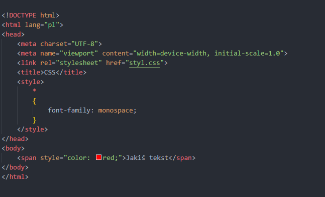
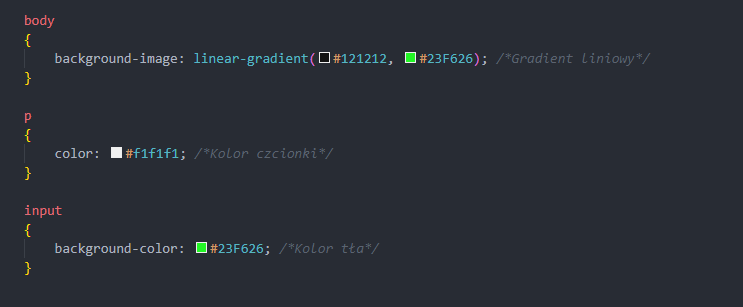
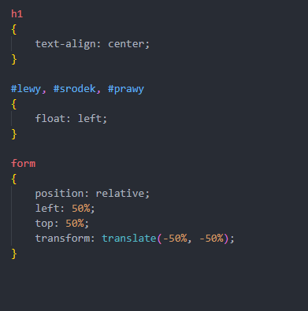
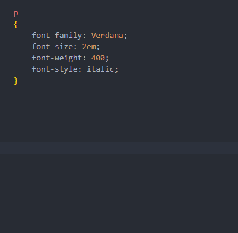
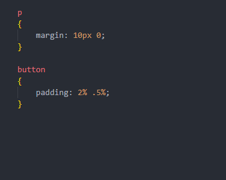
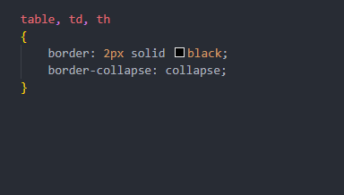
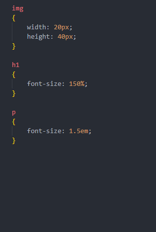

Język CSS to nierozłączna część każdej strony z uwagi na swoje przeznaczenie - upiększanie stron.
To dzięki takim stylom, strony internetowe wyglądają tak, jak widzimy w internecie.
Umieszczenie na stronie
Arkusz stylów CSS jest nierozłącznym elementem każdej strony internetowej. Pozwala on na upiększanie konkretnych elementów na stronie. Jednakże mamy aż 3 rodzaje umiejscowienia na stronie:
- Nagłówkowy – Styl napisany dosłownie w znaczniku
- Wewnętrzny – Styl napisany w sekcji head w pliku HTML
- Zewnętrzny – Styl napisany w oddzielnym pliku z rozszerzeniem CSS
Hierarchia stylów to: Nagłówkowy – Wewnętrzny – Zewnętrzny
Na egzaminie oraz w standardzie, aby ułatwić sobie pracę przy stylowaniu, tworzony jest plik zewnętrzny, który podpinany jest poprzez: <link rel="stylesheet" href="nazwapliku">, na stronach, gdzie styl ma obowiązywać. Taka metoda zapobiega chaosu w momencie modyfikacji pewnych elementów stylu. Zazwyczaj plik stylu w sekcji *, czyli każdego elementu na stronie zawiera tzw. zerowanie wszelkich marginesów zewnętrznych i wewnętrznych, ustala rodzaj czcionki czy jej rozmiar. Natomiast w części body, znajdują się informacje dotyczące np. wymiarów strony, koloru tła, czcionki.
Podpowiedź: Gdy na egzaminie w części CSS jest punkt: Domyślnie dla całej strony -> lepiej używać znacznika body, niż *, bo może tam być ustalony kolor strony, a nie chcemy, aby np. jakiś input miał także taki kolor.

Kolorowanie
Kolory możemy zapisać w zależności od konkretnego koloru poprzez:
- background-color: Kolor tła
- background-image: Tło wypełnione obrazem albo gradientem
- color: Kolor czcionki
Jak zatem możemy zapisać kolor:
- Tekstowo – Angielskimi nazwami określenie nazwy koloru, np. green
- Heksalnie – Zapis w formacie szesnastkowym, najczęściej używanym, np. #00FF00 (czasem można w formie skróconej do 3 znaków, np. #0F0)
- RGB – Kod kolorów w formacie: red, green i blue. Zapisujemy np. rgb(0, 255, 0) bądź z uwzględnieniem przezroczystości, wtedy używamy rgba(0, 255, 0, 100), gdzie a to kanał alfa
- HSL – Kod kolorów w formacie hue (barwa), saturation (nasycenie), lightness (jasność). Pierwsza wartość zapisana w przedziale od 0 do 255, dwie kolejne to wartości procentowe od 0% do 100%; przykład: hsl(120, 100%, 50%)

Wyrównywanie
Domyślnie, tekst przyrównywany jest do lewej strony, lecz czasem trzeba zmienić to. W zależności od tego, jak chcemy przyrównać, mamy parę atrybutów:
- text-align – Wyrównywanie tekstu. Rodzaje wyrównań to: left, center, right oraz justify. Wyrównanie to dotyczy tylko i wyłącznie tekstów
- float – Dotyczy wyrównania głównie bloków sekcji (div). Zazwyczaj używamy przyrównania do lewej (left), aby odpowiednie bloki były przyrównane obok siebie w jednej linii. Natomiast wartość right używamy, kiedy chcemy, aby jeden blok opływał drugi, jak np. obraz opływał zdjęcie
- position – Dotyczy ogólnie pozycji. Zazwyczaj używany w celu wyśrodkowania pewnego elementu na stronie w pionie lub poziomie (lub w obu kierunkach). Może być ono absolutne (absolute), czyli niezależne od innych elementów, relatywne (relative) do swojego rodzica. Jest jeszcze wiele innych, ale o nich można przeczytać w tym artykule.

Czcionki
Często czy to na egzaminie, czy to normalnie tworząc stronę stykamy się z potrzebą formatowania czcionki, zmiany jej wyglądu, grubości, wielkości, itd. Jakie mamy do tego właściwości?
- font-family – Ustalenie rodzaju czcionki, np. sans-serif, arial itd.
- font-size – Wielkość czcionki. Wyrażana w jednostkach absolutnych i responsywnych. Najczęściej w px, % lub em.
- font-weight – Grubość czcionki. Klasyczna czcionka posiada grubość 400, 700 to już pogrubiona czcionka, zaś wartość bold także pogrubia czcionkę
- font-style – Styl czcionki. Zwykle używamy wartości italic, czyli pochylenia czcionki.

Overflow
Właściwość opisuje widoczność danego elementu na stronie. Gdy używamy tego na egzaminie, zwyczajnie chodzi o wartość scroll, czyli możliwości przewijania zawartości danego bloku w przypadku nie mieszczenia się na stronie.
Marginesy
Marginesy służą do ustalania odległości względem danego znacznika, bloku itp. Mamy dwa rodzaje marginesów w CSS:
- margin – Margines zewnętrzny. Odnosi się do odległości na zewnątrz danego bloku.
- padding – Margines wewnętrzny. Odnosi się do odległości wewnątrz danego bloku. Zazwyczaj używany, aby tekst był w pewnej odległości od obramowania tego bloku (np. w przyciskach)
Marginesy posiadają 1, 2 lub 4 wartości. Wartości przypisywane są w kolejności według wskazówek zegara (góra, prawo, dół, lewo). Gdy podamy jedną wartość -> każda strona będzie mieć taką samą wartość. W przypadku podania dwóch wartości, pierwsza dotyczy marginesów górnych i dolnych, zaś druga dotyczy marginesów lewych i prawych.
Jednostki podobnie, jak w czcionkach albo absolutne (px), albo responsywne (% lub em)

Tabele
Jak wspomniano w HTML'u, tabela domyślnie i jej komórki nie posiadają obramowania, czy komórki są od siebie oddalone. Jeżeli musimy formatować tabele poprzez CSS, warto wspomnieć o dwóch najważniejszych właściwościach:
- border – Obramowanie. Posiada trzy istotne wartości: wielkość, rodzaj (np. solid, dashed, dotted) oraz wielkość/grubość
- border-collapse – Zwykle dotyczy komórek tabeli i służy do ujednolicenia obramowania tak, że komórki mają wspólne obramowanie, a nie każda osobno ma swoje obramowanie
Poza obramowaniem, jego stylu warto wspomnieć o border-radius, dotyczy to bardziej przyciskom, lecz skoro mówimy o obramowaniach to trzeba wspomnieć o zaokrągleniu rogów, wyrażanych w jednostkach.

Skalowanie i jednostki
Skalowanie jest często częścią formatowania wszelkiego rodzaju bloków, zdjęć, tekstów itd. Co prawda, trochę wspomniane było odnośnie jednostek, lecz tutaj trochę je uporządkujemy. Mamy pewien podział jednostek na:
- absolutne – Niezależne od innych elementów, czyli zależne od całej strony. Do takich jednostek zaliczamy: mm, px, pt. Najczęściej będziemy używać pikseli.
- responsywne – Zależne od elementu rodzica. Umożliwiają one na dynamiczne rozmiary w zależności od urządzenia. Zaliczymy do nich np. procenty (%), em (względem aktualnego rozmiaru czcionki).
Ponadto oprócz jednostek, mamy też możliwość ustalania wielkości poprzez właściwości width oraz height. Służą one do ustalania wymiarów czy to bloków, czy obrazów, czy innych elementów na stronie.
